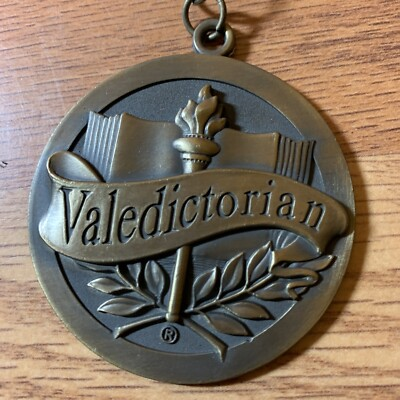

|
Sebastian Arrubla Hi! I'm Sebastian Arrubla, a full-time Political Science student at York University. Alongside my studies, I work part-time at Service Ontario, where I help clients access essential provincial services I’m passionate about government, public policy, political theory, and the ways institutions shape daily life. I'm constantly working on new academic projects and exploring opportunities in public service. |

|
Experience, Past Work, and HobbiesI'm working part-time at Service Ontario, where I supports clients on the Ontario Disability Support Program (ODSP) and Ontario Works (OW) through phone-based assistance and case inquiries. I am currently studying Political Science full-time at York University, focusing on public policy, democratic institutions, and civic engagement. My experience in frontline government service has strengthened my communication skills and deepened my interest in public administration. Outside of work and school, I enjoy playing games such as Escape from Tarkov, Fortnite, and Arc Raiders, collecting Pokémon cards, and staying active through soccer. |

|
Escape From Tarkov, Is one, if not the longest game I have ever played, It is an adventure extraction shooter that delves into great mechanics with a large world to explore. Plenty of fun with friends and I do reccomend to all!
Created By: Battle State Games EST 2015 Trailer
|

|
Service Ontario Social Assistance
EST 2025 - - - - - - - - During my time at Service Ontario, I learned how to approach those in need of urgent support. I learned skills that no other experience has to offer. Through this job, I assisted clients with their case files, connecting them to the correct resources, completing forms, and completing over the phone applications. Through this I have experienced many types of emotion, that not many people have the chance to experience. |
|

|
Valedectorian: 2020
I was class Valedectorian in 2020, as well as accomplishing the highest overrall math grade, science grade, and history grade of my year. |
.jpg)
|
Pokemon Card Collecting
Pokemon Card collecting has always been a passion of mine, and it is a great industry where the return on investement can be quite high. I fell in love with the hobby about a year ago and have built a collection quite large where if I were to sell it I'd be left with a large lump sum of money. Some of my Favourite Art Works are the Umbreon in Evolving Skies and Charizard from Phantasmal Flames |

|
Voluntary Work
In my final year of Highschool I took part in the graduation Committee where me and a team set up a formal ceremony for the graduating class of 2025. Me and a team also designed and requested certain parts of the year book through our administration and design through photoshop. In the end the yearbook was completed and was sold to graduating students. |
|
Sebastian Arrubla website. This is the source code to Jon Barron's public academic website: https://jonbarron.info/. Feel free to clone this code for your own personal use. |